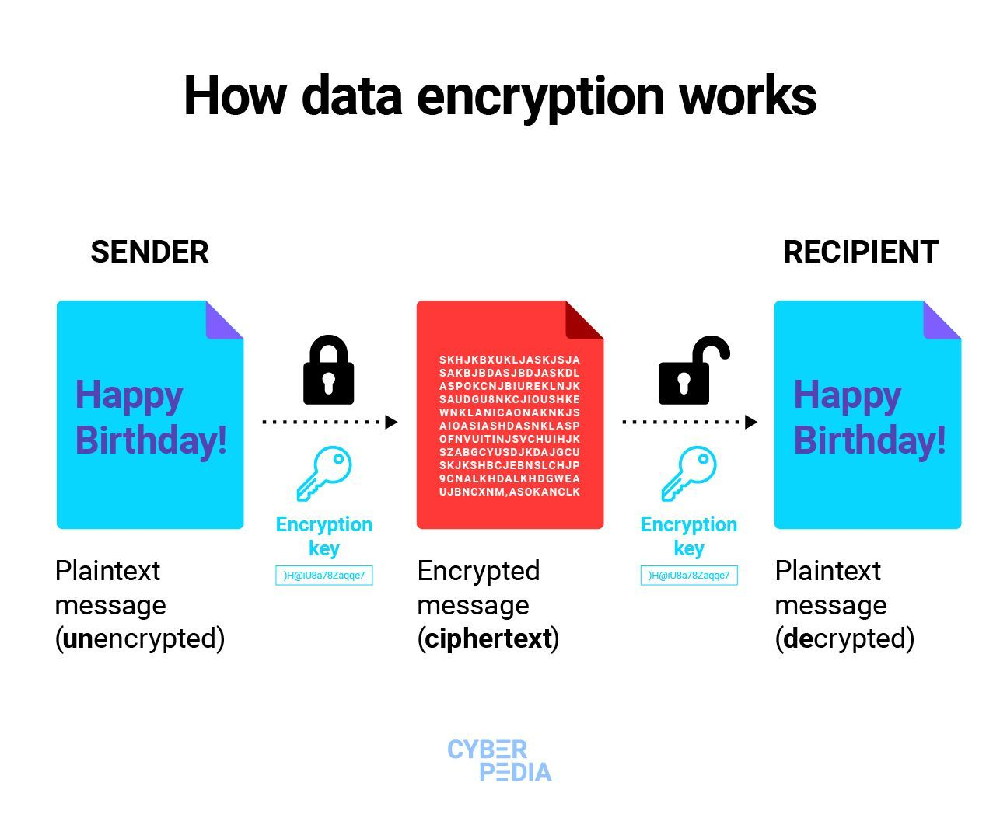
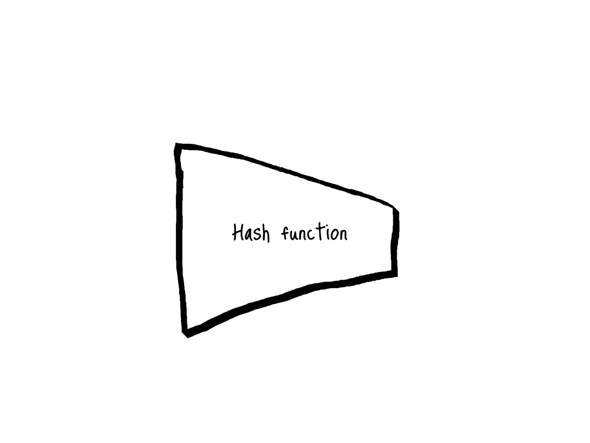

Facebook has a end-to-end encryption policy so that the compay is not able to read the data which will be like the privacy brech. So the data is encrypted and decrypted at user side and stored in encrypted form

Miliple way to encrypt the text one such algorithm is RSA algorithm.
RSA encryption is better for Facebook because it uses pairs of keys (public and private) to keep messages safe. It helps with secure logins, encrypting data, and making sure messages are from real users. This keeps Facebook safer for everyone by protecting information and making sure only the right people can see and use it.
view code
